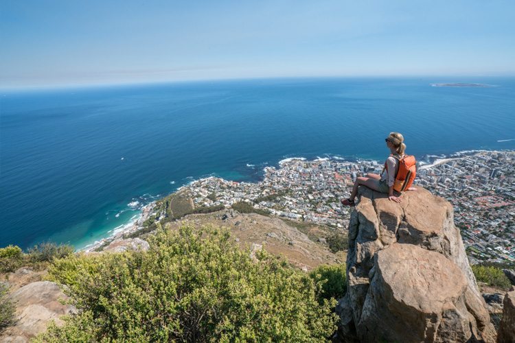
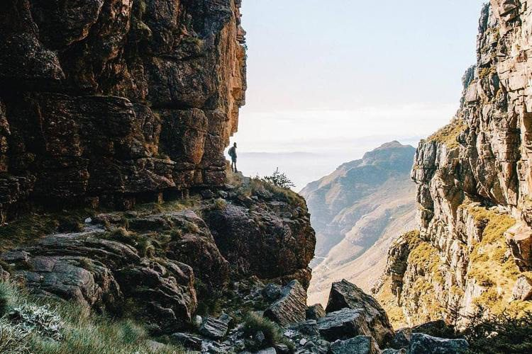
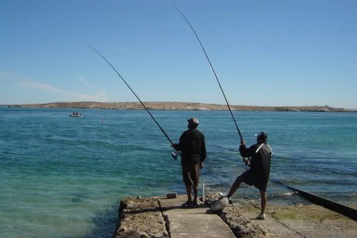
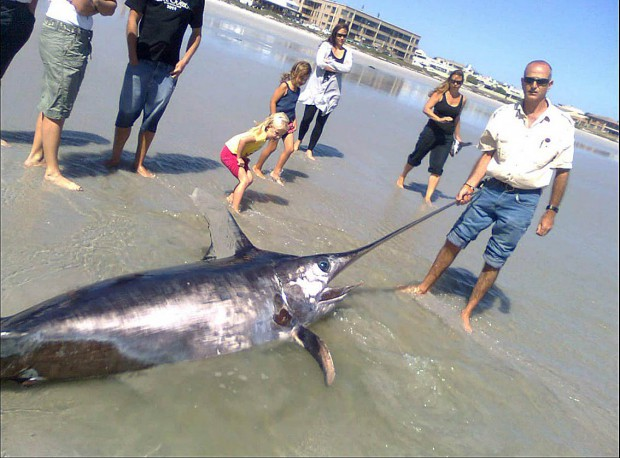
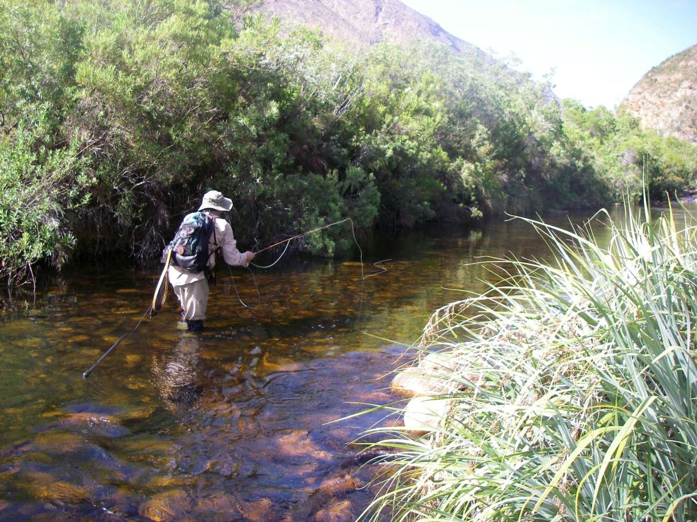
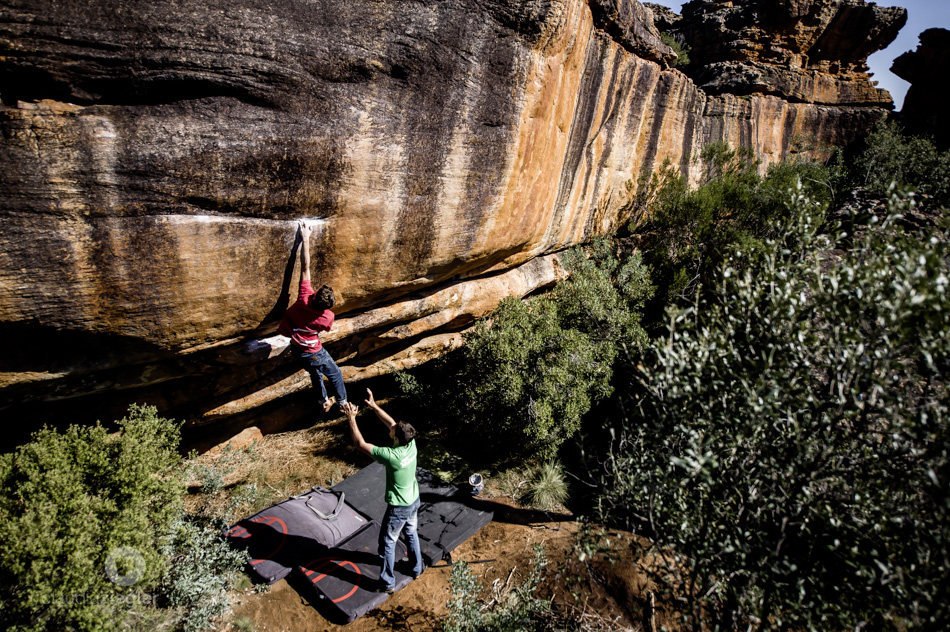
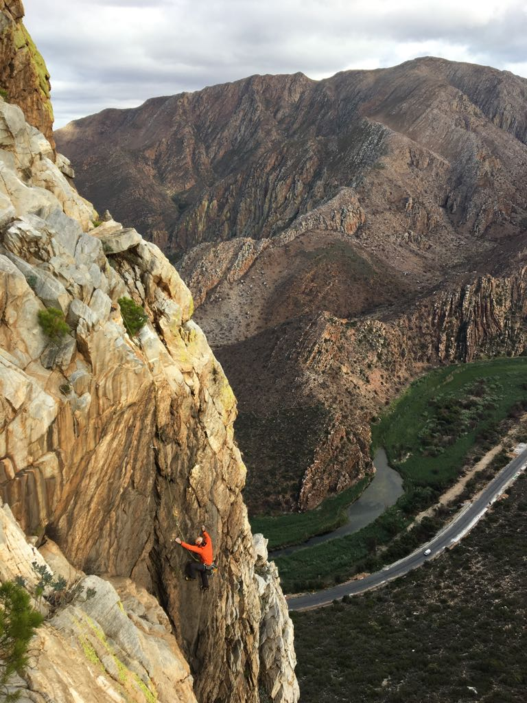
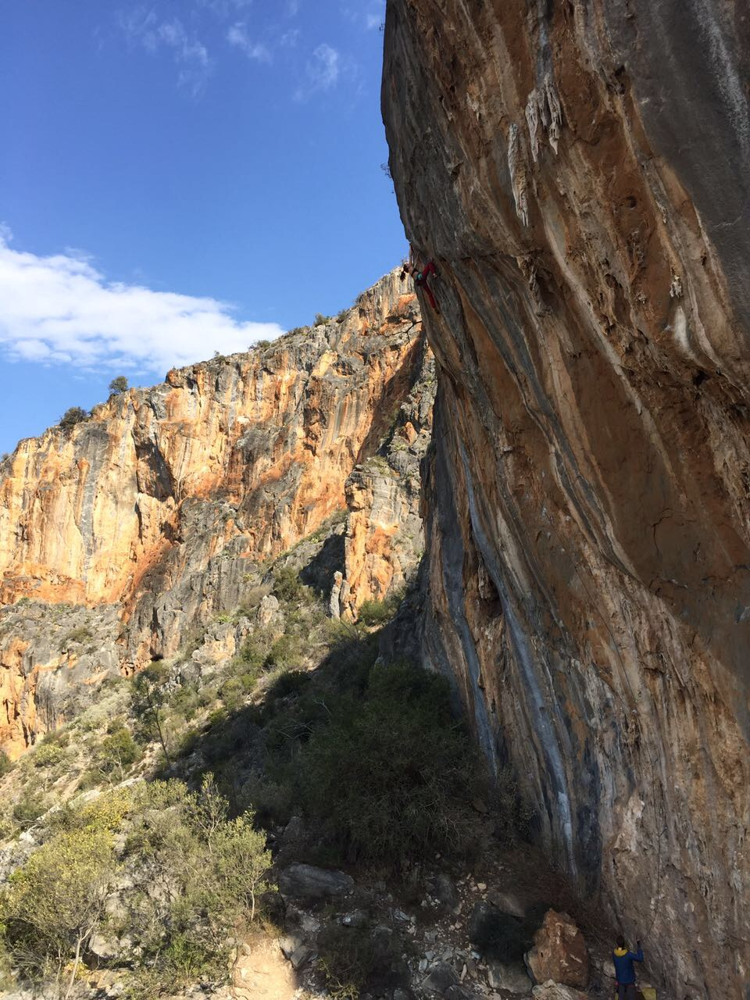
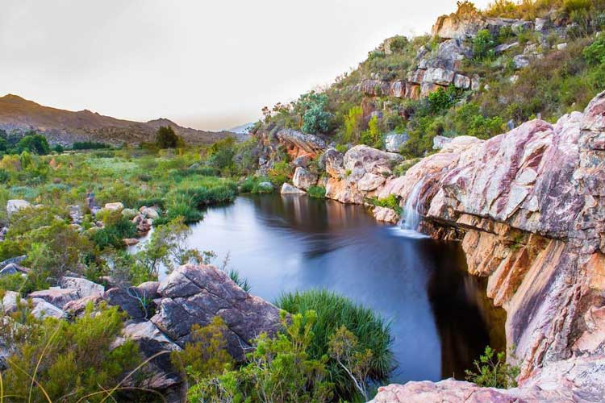
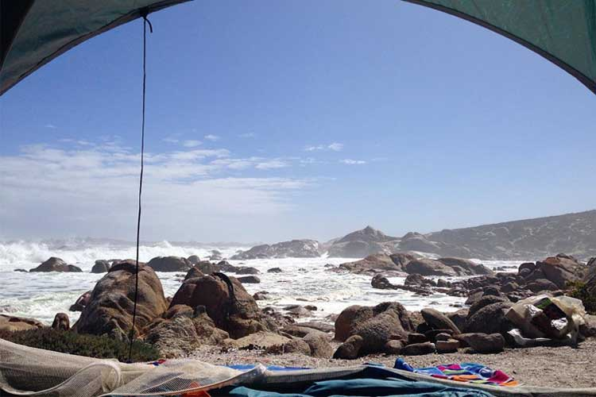

Hiking
Whether you’re after a windswept coastal wander, a mountainous hike with spectacular views, or a leisurely amble through one of the Cape’s lush nature reserves, here are our picks of the best hiking trails in and around the city. So, lace up your hiking boots and get cracking…
Below are some of our favourite loactions:
Hover over the images to view more info.

Lions Head
The distinct slope next to Table Mountain known as Lion’s Head offers magnificent views of the city, Table Bay and the Atlantic Ocean, making it a top spot for Instagrammers.
Duration: 2 - 3hours
Need to know: You will have to do some climbing, however there are handholds and chains to assist you. If, like me, you’d prefer to avoid the climbing, a roundabout route (that’s still quite steep) adds half an hour to your hike.

Platteklip Gorge
Probably the second most well-known hiking trail in Cape Town (after Lion’s Head), Platteklip is not so easygoing, despite its popularity. Sure, there’s not much climbing or scrambling involved, but there’s a lot of upward walking, which probably makes it the ideal route for a workout.
Duration: 4hours
Need to know: Platteklip is best avoided on a hot day, as there is little shade to be found along the trail.
Be prepared for all types of weather, and bring a hat, sunblock and jacket.
Proper hiking shoes are required; do not attempt this trail with slip-slops.
If you plan to take the cable car down, make note of operational times and ensure you reach the station before the last cable car leaves.

Pipe Track
This trail is not only mesmerisingly beautiful, it also has an interesting history, in that it was built for the purpose of servicing a pipeline that used to supply 19th-century Cape Town with water from the Disa Gorge, hence its name….
Duration: 4hours
Good to know: There are a number of trails that lead off the Pipe Track, but these should not be attempted without the assistance of a knowledgeable guide. Many of these trails are not beginner-friendly, and they are not recommended for children or dogs.
If you do have a guide, it’s recommended to visit Tranquility Cracks, a hidden gem that Capetonian hikers have only recently discovered.
Fishing
The shores of Cape Town are not only spectacularly beautiful, but are also fantastic for fishermen that crave a day on the open seas, preferably wrestling the catch of a lifetime. Outdoor Aventures offers unique fishing charters from the Western Capes scenic coastal towns.
Below are some of our favourite loactions:
Hover over the images to view more info.

Langebaan
This area borders the Langebaan Marine Protected Area near Kraal Baai. Use a live bait ledger rig with pilchard or squid as bait about 2 meters below the surface to target Yellowtail or Shad (Elf). Use pilchard or sand prawn as bait to target White Stumpnose. Best chance for success at high tide, turning low.
Best season to fish this spot: Summer, Fall
Time of day: High Tide
Expected Catch: Yellowtail, Shad, White Stumpnose

Melkbos Strand
This is a great spot to target Silver Kob (Kabeljou). Use a heavy ledger or strayline rig with pilchard or white mussel as bait. Best season is in summer after the southeast wind has come through. During winter Galjoen are taken with white mussel or red bait.
Best season to fish this spot: Summer, Winter
Time of day: Early Morning, Late afternoon
Expected Catch: Silver Kob, Kabeljou, Galjoen

Yzerfontein
This area close to Yzerfontein deliver some good sized Galjoen. Use a ledger rig with pilchard or white mussel as bait to target them. Fish during the winter months to increase your chance of success. A good chance of Yellowtail during the summer.
Best season to fish this spot: Winter
Best season to fish this spot: Winter
Expected Catch: Galjoen, Yellowtail
Rock-Climbing
Cape Town is South Africa's rock climbing Mecca with over 200 multi-pitch routes in the city on Table Mountain alone. There are hundreds of crags outside of the city at Du Toit's Kloof, Montagu, Paarl, the Cederberg as well as other locations. There are great bouldering opportunities in Rocklands.
Numerous guidebooks are available but if your stay is short, opt for our experienced guides who will provide gear (no need to travel with heavy kit) and they will take you out to locations…
Below are some of our favourite loactions:
Hover over the images to view more info.

Rocklands
Rocklands is a very beautiful area in a semi-desert setting, very isolated and very safe. Rocklands is undoubtedly famous for it’s world class bouldering but this should not deter you from sampling the fine sport climbing.
Location: Cedeberg Mountains (250km north of Capetown)
Difficulty: Easy to Hard (multiple boulders caters for both first timers & those looking for a challenge)
Accomodation: Multiple 5-star B'nbs to choose from

Montagu
Montagu’s rock walls offer a wide variety of high quality climbing opportunities at every level from beginner to expert. The area has over 450 climbing routes which cater for climbers of all levels of experience. Montagu is recognised as one of the outstanding climbing destinations in South Africa.
Location:Cogmans Kloof pass 180km East of Capetown
Difficulty: Easy to Hard (multiple boulders caters for both first timers & those looking for a challenge)
Accomodation: Holiday homes available to rent
Price:From R750 - R3500pp

Oudtshoorn
World Class Sport Climbing 30 km north of Oudtshoorn (near the Cango Caves). The rock is limestone and the routes are mostly overhanging with awesome stalactites. There are 111 single pitch sport routes, 13 of which are projects. Routes are up to 35m long.
Location: 6 hour drive noth of Capetown
Difficulty: Hard
Accomodation: Multiple 5-star B'nbs to choose from
Camping
Whether you’re looking for back-to-basics beauty, a fun family getaway, or a romantic retreat, we’ve got you covered with our picks of campsites in the Cape
Below are some of our favourite loactions:
Hover over the images to view more info.

Secret Falls
Roughly 100 kilometres from Cape Town lies this tranquil campsite tucked in the Winterhoek Mountains.
Location: Tulbagh
Activities:This campsite has it’s own private spring-water swimming pool, so there’s loads of dipping to be had. Expect an abundance of fynbos, hiking trails, waterfalls and rockpools. And if you’re adventurous enough, go ziplining in nearby Ceres.
Facilities: Private braai areas with large table and benches. Communal ablutions with hot water. No electricity
Price:R1560 - R3000

Beaverlac
Tucked away in the Groot Winterhoek Mountains above Porterville, this charming no-fuss campsite epitomises the great outdoors in all its rugged majesty..
Location: Olifants River Mountain
Activities: Enjoy a wide variety of dog-friendly hiking trails up the Groot Winterhoek Mountains followed by a dip in one of the rockpools and waterfalls.
Facilities: Communal ablution facilities. There’s no electricity but there’s a small shop selling wood, beer, wine, ice and snacks, with a power point and freezer for use.
Price: R50+

Tietiesbaai Rest Camp
Pitch your tent among the rocks and listen to the sounds of the ocean. The West Coast is especially colourful during the spring flower season.
Location:Cape Columbine Nature Reserve
Activities: Visitors can explore the wonders of the Cape Columbine Nature Reserve, a beautiful stretch of coastline covered with fynbos fields and sandy beaches.
Facilities: Communal washing and shower facilities. Solar panels supply heated water. No electricity.
Price: R104 – R153